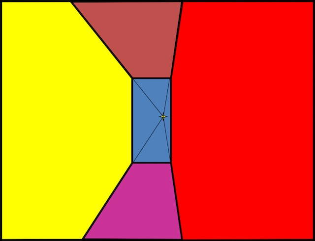

Tour into the Picture / Video Textures
CS 194-26 Final Project · Owen Jow · December 2016
[01] Part 1: Tour into the Picture
As project 1 (of 2), we implement a user interface capable of generating 3D scene models from a lone image (a process known as single view reconstruction). Following the techniques described in Tour into the Picture by Horry et al., we represent our scene as an axis-parallel box with five faces:
Figure 01: the interior of a cardboard box |
Accordingly, we have to limit our input to scenes that can be modeled with a box volume, i.e. scenes that have a similar structure to the content of Figure 1. We also require that our scenes be one-point perspective; that's actually going to be part of the user input for our program. Examples of valid input scenes are shown below:
|
|
|

Figure 02: potential input imagery
Just a second ago we mentioned user input! Before our program can do anything, we require that the user specify certain constraints on the box-to-be. Specifically, he/she needs to indicate the vanishing point and the back wall of the box by selecting three locations: the vanishing point itself, the top-left corner of the back wall, and the bottom-right corner of the back wall.
Once we have this information, we can get to work. The user has specified the 2D coordinates of the back wall vertices, but we still need to transform those into 3D. We also need to calculate the 3D coordinates of the remaining four vertices. After we've done so, we'll rectify the textures for each of the five planes (using the projective warping technique from the previous project) and apply them to our 3D box. At this stage, we can move around inside of our box in order to look at the scene from different perspectives. Pretty neat!
Possibly sacrificing efficiency for familiarity, we have written the code for this project in Python 2.7. In doing so, we've also created potential starter code for future Python users; the already-implemented portion is similar to that of the MATLAB version in the assignment spec. Note that for the 3D scene modeling and real-time walkthrough aspects of TIP, we use PyOpenGL and wxPython.
From 2D to 3D: Creating the Axis-Aligned Box
After the user has labeled the vanishing point and back wall, we essentially have this (the blue region in the figure below):

Figure 03: user input |
We want to recreate (in 3D) everything else within the image. To do so, we follow this diagram:
Figure 04: similar triangles are godlike
On the left, we have the labeled 2D image. \(V\) is the vanishing point, while \(A\) and \(B\) are – respectively – the bottom- and top-right corners of the back wall. In the other half of the figure, we have a depiction of the side view; if the left image describes the horizontal and vertical dimensions, then the right image describes the vertical and "depth" dimensions. (The vector from \(C\) to \(V\) would be pointing into the image.) \(h_1\) and \(h_2\) are the top and bottom coordinates of the original photograph in a vertical sense, and \(C\) is the camera position (which we know to be level with the vanishing point \(V\)). \(B', V',\) and \(A'\) are the coordinates of \(B, V,\) and \(A\) in "actual" space, or at least that of the 3D box. Finally, \(f\) is the focal length.
Put another way, \(B\) and \(A\) are (respectively) the top of the "top" segment and the bottom of the "bottom" segment shown below. Incidentally, if we consider the x-, y-, and z-dimensions to be width, height, and depth in that order, then Figure 5's crosshair center singles out the x- and y- coordinates of the "camera."
Figure 05: ratio segments |
Going back to Figure 4, we know (or can easily calculate) \(a\), \(b\), and \(f\). We also know the width and height of our box, since those will simply be set to the width and height of our back plane. Therefore, the only value remaining to determine is the depth of our box \(d\). To acquire it, we adhere to the following algorithm:
set h = h2 - V.y set l' = V.y - h1 compute d_bottom as (h * f / a) - f compute d_top as (l' * f / b) - f repeat for d_right and d_left (using horizontal a', b', V, h1, and h2 values) set depth = max of d_bottom, d_top, d_right, d_left
We assert that \(d_{bottom}\) and \(d_{top}\) are equal to \((hf / a) - f\) and \((l'f / b) - f\) because of the properties of similar triangles. \(CVA\) and \(CV'A'\) are similar triangles, as are \(CVB\) and \(CV'B'\), and accordingly we can say that \(f / a = (d_{bottom} + f) / h\) and \(f / b = (d_{top} + f) / l'\).
Anyway, we now have the height, width, and depth of our 3D box... along with the individual depths of each of the four side/top planes. That's all we need! To get actual 3D coordinates, we can simply position one of the vertices (or center the rectangular prism) at the origin and go from there. We also have to texture map the box; we do this by rectifying each of the "non-back plane" image fragments (into the shape specified by the width or height and the appropriate \(d\_\) value) and applying them to their corresponding box walls.
Scene Walkthroughs
Scene walkthroughs aren't conceptually complicated. We already have our 3D model; we just have to adjust the camera if we want to alter our perspective. For the purposes of this project, we add mouse and keyboard controls for six-DOF translation and four-DOF rotation.
Results
Figure 06: oxford (original and novel views)
Figure 07: royal exhibition (original and novel views)

|

|

|

|
Figure 08: scientology (original and novel views)
Additional Notes
Resolution is extremely important here. TIP might seem magical at first glance, but it really only uses the information that's already in the picture. If we don't have many color values for our images, then the homographies will have a lot less to work with. That being the case, low-resolution images will usually result in stretched and uninformative surroundings... not so impressive!
Also, it'd be nice to properly represent foreground objects (perhaps as a future extension). As it stands, they just get flattened into the side planes. To circumvent this, we would want to mask the elements out of the original image, create models for each of them (3D would be nice, but rectangles are fine if we don't know the dimensions), and then stick them back into the box at appropriate depths. If using rectangles, we'd be able to calculate the 3D coordinates as before – i.e. through similar triangles.
Image Sources by Figure
Figure 01 |
(openbox) |
|---|---|
Figure 02 |
(fancy) / (museum) / (room) / (antechamber) / (oxford) / (warehouse) / (sjerome) |
Figure 03 |
(input) |
Figure 05 |
(ratio_segments) |
Figure 07 |
(royal) |
Figure 08 |
(scientology) |
[02] Part 2: Video Textures
In a similar vein to TIP, we're going to take the visual information we already have and transform it into an interesting new format. This time, however, we're going to do it with video. From the original paper on the topic (Schödl et al.), a video texture is a "continuous infinitely varying stream of images." It can be thought of as a dynamic video of some repetitive phenomenon that can loop into itself forever (and not just in the same way every time!). For this project, we focus on synthesizing our own arbitrary-length video textures by overusing the frames within short "training" videos.
This means that we'll take all of the frames from our source video, compute the pairwise transition probabilities between each of them, and finally use those probabilities at runtime to continually determine which frame we'll jump to next (à la Markov). We define a transition probability \(Tr[i, j]\) to be the probability that frame \(j\) succeeds frame \(i\).
Intuitively, the probability that a frame comes after another frame is related to how similar (in content) the proposed successor is to the frame's actual successor. Thus, we'll first compute the \(L_2\) distance between all pairs of frames – a lower value implies "more similar," of course – retaining these values in an \(n\) x \(n\) matrix \(D\) such that \(D_{ij} = \|im_i - im_j\|_2\). (Note that \(n\) is the total number of frames.) Then, in the process of obtaining \(Tr[i, j]\), we'll be able to easily reference the similarity between images \(i + 1\) and \(j\) (or any pair of images we like).
However, this leaves us with a problem. Namely, if we only ever look at the similarity between two individual frames, we neglect to consider the dynamic context as a whole; the preservation of natural motion is not in any way guaranteed.

Figure 09: pendulum inaccuracy |
In Figure 9, frame \(i\) looks a lot like both \(j_1\) and \(j_2\). If we were trying to find a transition out of the \(i - 1\) image, our current scheme would think of both \(j_1\) and \(j_2\) as reasonable successors. Despite this, if we pay attention to the frames both before and after \(i\) we immediately realize that the pendulum is supposed to be moving to the left. Again looking at the frames' neighbors, it's clear that \(j_2\) has the pendulum moving to the left, but \(j_1\) comes from a sequence where the pendulum is moving to the right. We should say that \(j_2\) is a good successor, while \(j_1\) is by contrast a poor one. Since we are unable to make this call by comparing only individual images, we are forced to take into account neighborhoods (sequences) of frames instead, i.e. we think about the temporally adjacent frames in addition to the frames themselves.
Mathematically, it comes together as follows:
We are filtering our \(D\) matrix with a kernel of binomial weights \([w_{-m}, ..., w_{m - 1}]\). We use \(m = 2\).
One last thing before we wrap everything up: we need to make sure we avoid transitions that lead to dead ends (i.e. the the last frame of the video; we have no information about the frame "after" the last one and therefore no transition out of it). To address such a problem, we need to broaden the scale at which we operate – we're still focusing too much on local comparisons of frames. Thus, we attempt to predict the "future cost" of selecting a transition by thinking about the transitions likely to come afterward. If the cost of a transition is high, we'll want to "jump out" early by not selecting it.
In representing this, we'll create yet another matrix \(D''\). We define \(D''_{ij}\) as the expected average cost to result from selecting the transition from frame \(i\) to \(j\). These values are assigned through Q-learning:
\(p\) handles the tradeoff between following a single high-cost transition and following multiple low-cost transitions. A larger value of \(p\) signifies a greater propensity toward the latter. Meanwhile, \(\alpha\) \((0 < \alpha < 1)\) is the learning rate.
For more efficient updates, we alter the order by which we modify the rows in \(D''\) – realizing that the best path usually involves a transition from a frame near the end of the overall sequence. Therefore, we compute updates from back to front (from the last row to the first) and propagate transition costs forward. We initialize \(D''\) and said costs as follows:
Then we perform updates as \(D''_{ij} = (D'_{ij})^p + \alpha m_j\), making sure to refresh the \(m_j\) values after every step.
Let's tie it all together at last. To get a hard probability for \(Tr[i, j]\), we apply an exponential function and end up with \(Tr[i, j] = exp(-D''_{i + 1, j} / \sigma)\). To ensure that transition probabilities sum to \(1\) for each frame – as probabilities must – we'll also need to normalize the values within each row of \(Tr\).
\(\sigma\) controls the amount of variety we allow in our transitions. If it's higher then there'll be more unpredictability (always a nice thing in life), but that would also mean we've opened the gates to transitions of worse quality. For our purposes, we set \(\sigma\) to be \(0.04\) times the average nonzero \(D''_{ij}\).
The Algorithm
Overall, the algorithm looks like this. Our implementation uses OpenCV (Python) for video processing.
extract all frames from video
# Construct the probability table (analysis)
set D = a matrix where D_{ij} = ||equalized frame i - equalized frame j||
set D' = a matrix where D'_{ij} = sum over k of w_k * D_{i + k, j + k}
set D'' = a matrix where D''_{ij} = (D'_{ij})^p
set m = a vector where m_j = min over k of D''_{jk}
until the entries of D'' converge:
in order from the last row to the first row:
set D''_{ij} = (D'_{ij})^p + alpha * m_j (for all j in row i)
set m_i = min over j of D''_{ij}
set Tr = a matrix where Tr[i, j] = exp(-D''_{i + 1, j} / sigma)
prune [non-diagonal] transition probabilities that aren't local maxima
normalize each row of Tr s.t. the values sum to 1
# Generate the video texture (synthesis)
write the third frame to our output video
until we've generated the desired number of frames:
using Tr, randomly select a successor to the previous frame
write the successor to our output video
Results

|
Figure 10: pendulum, visualizations of D, D', D'', and Tr
Figure 11: mostly boring candle, visualizations again
Additional Notes
We lose the first two frames and the final frame during the preservation of dynamics step (since the 4-tap filter doesn't have enough information to calculate transition values for them). On the bright side, the last frame is definitely a dead end so we never want to end up there anyway.
Also, we don't allow frames to transition into themselves. If they try, we exercise veto power and run another random frame selection. We've got to be able to do better than that!
Image and Video Sources
The pendulum video and imagery are from the folks who did the video textures paper. The candle video is from Videezy.